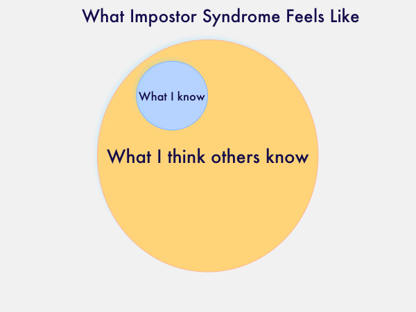

I am Jonas Brandel, the founder and creator of PageLr.com and Contenator.com and their technologies. I love to solve problems and build technologies, especially ones that doesn't exist or doesn't do what is needed. Before creating PageLr and Contenator I solved problems and built technologies for Microsoft for some 18 years.
Well, for sure sometimes it feels like it alright, so many details, framework, nuances in intricate language syntax, I'm sure you know what I mean...
Whether you call it imposter syndrome or simply your jerkbrain acting up, we all have our moments of feeling like a fake and that, someday, everyone will find out. And at it turns out, one of the professions most prone to imposter syndrome is software development. Article by Sharon Fisher, April 20, 2016

Recursion, how to twist your brain inside out... a brain exercise to 'get' recursive thinking
Check back here for further ramblings from the Impostor programmer!
For more details see GitHub Flavored Markdown.